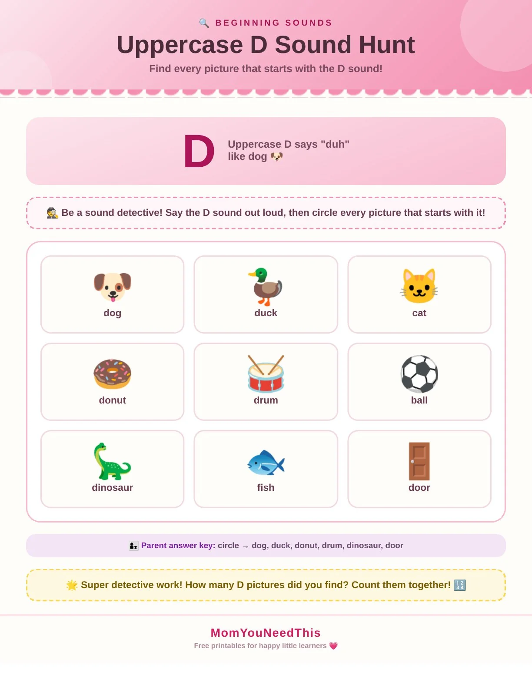

Uppercase D Sound Practice Recognize The Uppercase D And Its Sound
Start letter learning with this uppercase D printable. Your child will spot the capital letter, practise hearing its tapping /d/ beginning sound in familiar words, and learn to check for its straight back.
🐶 Dog
🦆 Duck
🥁 Drum
Quick Answer
Capital D is the letter that starts names, months and book titles — and this page turns it into a hunt. Preschoolers search a page of mixed letters for every uppercase D, circling each find while they practise its beginning sound, the tongue-tapping /d/ in Dog, Duck and Drum. It builds phonemic awareness and letter recognition, is designed for ages 3-5, and prints free at home with no signup needed.

🔠 Find The Uppercase D
Say the letter name and sound together: “D says /d/.” Then find every uppercase D on the page and stamp or circle it. D hides among the round letters — its straight back is the giveaway: if one side is flat, it is a D, not an O.
⬇️ Download Free Printable 🖨️ Print🎁 Free printable for toddlers & preschoolers
🎵 Make The Sound Together
Make the d sound together: tap your tongue behind your top teeth and let it bounce — d-d-Dog! Try it with all three words on this page: Dog, Duck, Drum. Put a hand on your throat and you can
🧲 Letters Are Everywhere
Capital D is the letter that starts names and sentences, so it is worth spotting out in the world: the D at the start of Dan and Daisy, the D in December on the calendar, the D on book covers. Every sighting is a small win to celebrate.
signs, packages, and toys throughout the day. Real-world spotting makes learning stick.🎨 Keep Exploring Free Letter Activities
More alphabet learning activities are added regularly for toddlers and preschoolers.
🎁 View All Free Resources🔊 The D Sound
The D sound is made with the tongue: it taps the ridge just behind the top teeth and lets go — d. It is a quick tap sound — d-d-Dog, d-d-Drum — and it is the noisy twin of T: same tap, but with your voice humming along.
Capital D begins Dog, Duck and Drum on this page. You will also meet it standing at the front of names like Dan and Daisy and at the top of December on the calendar — capitals do the starting job everywhere.
D also begins door, doll, desk and dinosaur — good words for a spotting game after the printable. And its shape is worth a close look: a straight line with one big belly is D; two bellies would make it a B.
🖨️ How to Use This Printable
Get started in minutes — everything here is free and made for busy parents.
- Download the printable. Tap the download button to save the free Free Uppercase D Sound Practice file to your device.
- Print it out. Use any home printer and regular paper — cardstock works great for pages little hands will use again and again. The print button opens the full-size page in a new tab if you prefer to print from there.
- Learn together. Sit with your child and tap out the /d/ sound each time a D is found. Check for the straight back together — that flat side is D's signature. Short sessions work best.
- Explore more. Check the free printables linked below for your next activity.
❓ Free Uppercase D Sound Practice FAQs
Is this Free Uppercase D Sound Practice printable free?
Yes — every printable on MomYouNeedThis is 100% free to download and print. No signup, no payment, just tap the download button and print fresh copies of the D page whenever your child wants another hunt.
How do I use this uppercase D sound printable?
Tap download, print the page, and settle in together. First say the letter's name and tap out its sound — /d/, like Dog. Then hunt: circle every capital D hiding among the other letters, checking each one for its straight back. Short, playful sessions work better than long lessons for little learners.
What literacy skills does this practice?
Letter recognition, beginning sounds, and print awareness — plus careful looking: telling D apart from O and B, its round neighbours, sharpens the visual discrimination early readers rely on. These are the core pre-reading skills that prepare children for phonics and reading.
🔗 More Free Printables You’ll Love
Pair this printable with more free learning activities from the MomYouNeedThis library.
- 🔊 Free Lowercase Letter D Sound PracticeFree printable lowercase letter d sound practice for little learners.
- 🔊 Free Uppercase Letter E Sound PracticeFree printable uppercase letter e sound practice for little learners.
- 🔊 Free Uppercase Letter F Sound PracticeFree printable uppercase letter f sound practice for little learners.
- 🔎 Free Find Letter D SoundFree printable find letter d sound practice for little learners.